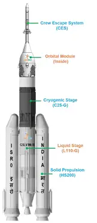
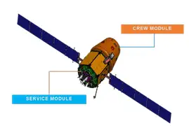
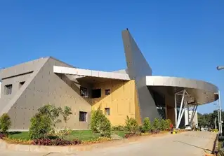

Gaganyaan project envisages demonstration of human spaceflight capability by
launching crew of 3 members to an orbit of 400 km for a 3 days mission and bring
them back safely to earth, by landing in Indian sea waters.
Gaganyaan project envisages demonstration of human spaceflight capability by
launching crew of 3 members to an orbit of 400 km for a 3 days mission and bring
them back safely to earth, by landing in Indian sea waters.
Gaganyaan project envisages demonstration of human spaceflight capability by
launching crew of 3 members to an orbit of 400 km for a 3 days mission and bring
them back safely to earth, by landing in Indian sea waters.
Gaganyaan project envisages demonstration of human spaceflight capability by
launching crew of 3 members to an orbit of 400 km for a 3 days mission and bring
them back safely to earth, by landing in Indian sea waters.
Human rated LVM3 - HLVM3
LVM3 rocket - The well proven and reliable heavy lift launcher of ISRO, is
identified as the launch vehicle for Gaganyaan mission. It consists of solid stage,
liquid stage and cryogenic stage. All systems in LVM3 launch vehicle are re-configured
to meet human rating requirements and christened Human Rated LVM3. HLVM3 will be capable
of launching the Orbital Module to an intended Low Earth Orbit of 400 km.

Orbital Module
Orbital Module (OM) that will be Orbiting Earth comprises
of Crew Module (CM) and Service Module (SM). OM is equipped with
state-of-the-art avionics systems with adequate redundancy considering human safety.
CM is the habitable space with Earth like environment in space for the crew.
It is of double walled construction consisting of pressurized metallic Inner Structure and
unpressurised External Structure with Thermal Protection System (TPS). It houses the crew interfaces,
human centric products, life support system, avionics and deceleration systems. It is also designed
for re-entry to ensure safety of the crew during descent till touchdown.
SM will be used for providing necessary support to CM while in orbit. It is an
unpressurized structure containing thermal system, propulsion system, power systems,
avionics systems and deployment mechanisms.

New technologies being developed for Gaganyaan
Human safety is of paramount importance in Gaganyaan mission. In order to ensure the same,
various new technologies comprising of Engineering systems and Human centric systems are
being developed and realised.
